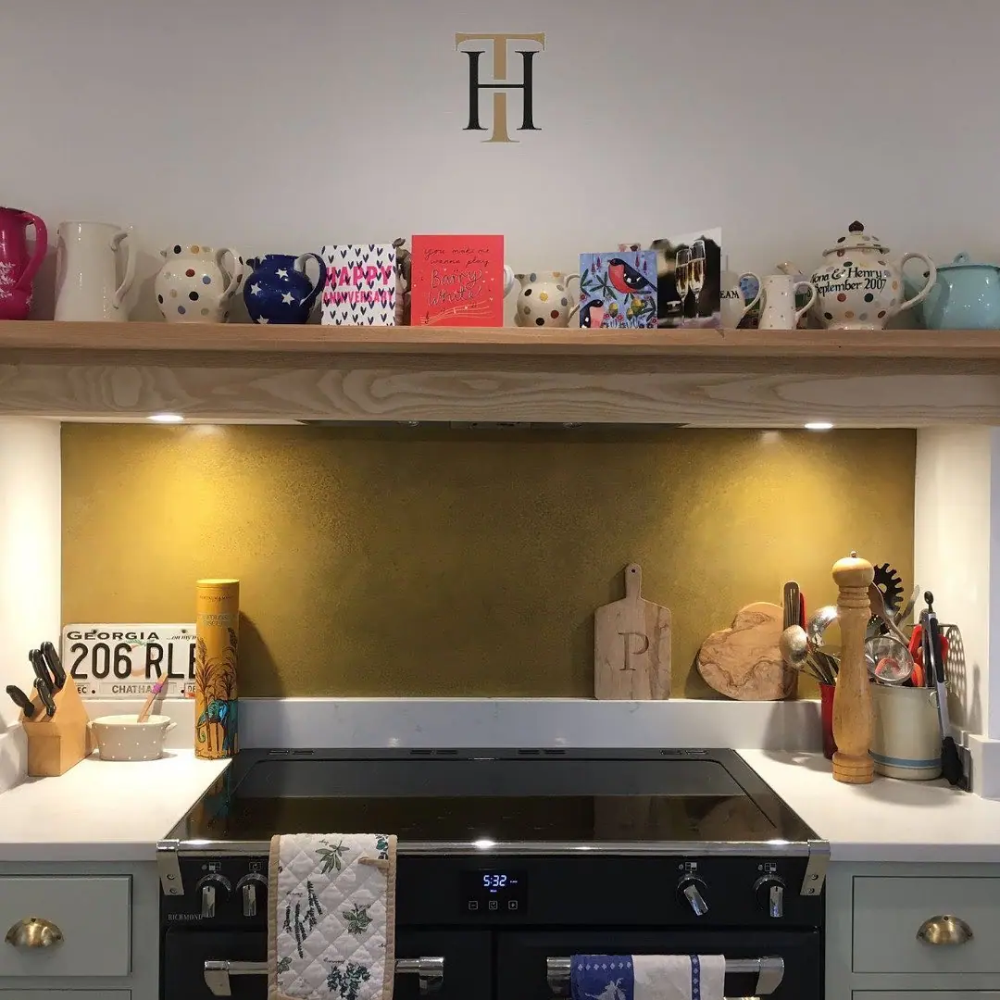

If you’re thinking of adding a brass splashback to your kitchen, you might wonder where to begin. Are you looking for a muted, matte surface, a dramatic aged brass effect or dazzling, polished brass? Do you want to protect the wall behind your sink, stove, or right the along your worktop? Whether your kitchen is modern or contemporary, your colour scheme light or dark, there’s a brass splashback to suit. Scroll through these golden nuggets of inspiration and find the perfect brass splashback idea to make your kitchen shine.
1. Wooden and White
Rich wood with intriguing knots and patterns makes the perfect partner for gleaming golden brass. This pared-down kitchen with its gorgeous cabinetry keeps things minimal, letting that neat oblong of brass behind the mixer tap make a bold statement (and stopping that immaculate white paintwork from getting damaged).
2. Colour and Texture
Anything but minimalist, this lively kitchen throws candy pink and petrol blue together with a stunner of a strip of patinated brass slicing across the middle. We love how the splashback separates the gallery wall from the worktop, protecting the paintwork and adding a luxurious touch.
3. Grey and Gold
An otherwise dull, grey kitchen is brought to life with the addition of lustrous, textured brass . These panels reach higher than the average splashback, turning the wall into a spectacular feature. Square, brass handles on the drawer and a shiny light fitting tie the brass theme together with an understated bow.
4. Splashbacks and Worktops
Why limit the brass to splashbacks when you can go all-out?! Give your kitchen the Midas touch by installing shimmering brass worktops as well as your splashback. This design brings the brass to the sink, the taps, even the storage shelf running along the length of the wall. The ultimate, statement-making brass kitchen.
5. Matte and Shiny
Some of the best interior designs incorporate contrasts: not just in colour but in texture. This kitchen design is a lesson on how to combine finishes for an impactful result. The deep, matter-than-matte olive green walls and cabinets make a clean backdrop for that full-length, aged brass splashback .
6. Dark and Golden
There’s something about the combination of dark colours and gold tones that shouts opulence and luxury. This neat nook of a kitchen is installed in an award-winning New Zealand tiny home, where space is very limited. Sunk into cabinets of a plush, midnight blue, the sophisticated antique brass is a practical focal point.
7. Coffee and Cream
From a stark contrast to uniform tones, this Paris kitchen sticks to one warm and inviting shade. The cappuccino colours of the wooden cupboards and the marble island are all on the same mellow spectrum as the hammered brass splashback and those vintage mid-century light pendants.
8. Homely and Warm
Sometimes the simplest ideas are the most effective. You don’t need to completely remodel or refit your kitchen to enjoy the benefits of a brass splashback. This beautiful example, installed behind our client’s range cooker shows how adding a brass splashback to your existing kitchen design can switch things up and give your room a shiny new focal point.
9. Black and Gold
Treat your kitchen to a glamorous makeover when you combine black cabinetry with brass accents. This particular splashback goes way beyond protecting the walls, reaching right up to the ceiling to deliver the kind of jaw-dropping feature wall you’d never achieve with paint and a roller.
10. White and Gold
White and gold are a winning colour combination, but this elegant kitchen design takes things a step further. As well as ticking the textural contrast box with those matte white cupboard doors, this dreamy setup includes brass cladding on the underside of the wall units. The result is an expansive, reflective space, full of light and oozing luxury.


If you can dream it, we’ll make it.
Bars, balustrades, staircases, worktops, cladding and pieces that don’t have a name yet. Our designers and craftspeople work in brass, copper, zinc and steel, and alongside wood.